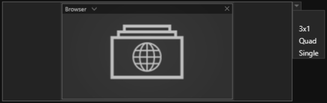
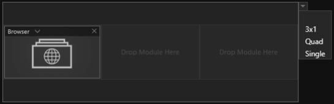
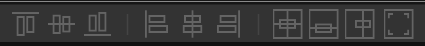

Sessions
Sessions beinhalten im Kern eine Agenda, der Ablauf Ihrer Präsentation. Sessions werden einer Show zugewiesen.
Session List
 Das Session List Fenster unterteilt sich in 4 Bereiche (farbig markiert).
Das Session List Fenster unterteilt sich in 4 Bereiche (farbig markiert).
◯ User Folder:
Übersicht der öffentlichen und benutzerspezifischen Verzeichnisse, in denen Sessions gespeichert sein können. Das öffentliche Verzeichnis ist für alle NutzerInnen des Computers einsehbar, wie bspw. Gastkonten. Das benutzerspezifische Verzeichnis ist nur für angemeldete NutzerInnen einsehbar, siehe Administration in Abschnitt Home. Wenn Sie mit einem Administrator Account eingeloggt sind, sind die zusätzlichen Verzeichnisse "SessionTemplates", "Default" und "Backup" sichtbar. Im Bereich "SessionTemplates" können Sie Templates für Sessions erstellen. Befindet sich dort ein Eintrag wird nun beim Erstellen im öffentlichen und im User-Verzeichnis ein Auswahldialog eingeblendet, wo alle Templates aufgelistet sind.


◯ Listenansicht:
Listenansicht der verfügbaren Sessions mit Suchfunktion - Die Eingabe ist sensitiv und filtert dynamisch die Liste entsprechend Ihrer Eingabe. Jede Session in der Liste hat folgende Attribute:
- Name: Name der Session
- Date: Erstellungsdatum
- Author: Accountname der Person, die die Session erstellt hat
- Category: Weisen Sie Ihre Session einem Typ zu. Typen werden kundenspezifisch und nach Absprache angelegt
- Released: Freigabestatus - Nur freigegebene Sessions können einer Show zugewiesen werden
◯ Session Inspector:
Der Session Inspector stellt die wichtigsten Eigenschaften einer ausgewählten Session bereit. Mit dem ‘Edit Session’ Button gelangen Sie in die Bearbeitungsebene der Session, den Session Editor.
Session Editor

Der Session Editor besteht aus mehreren Bereichen (farbig markiert)
◯ Agenda:
Dieser Bereich zeigt die Struktur der Agenda als hierarchischen Baum. Im Showroom wird die konfigurierte Agenda grafisch dargestellt und ist das zentrale Navigationselement einer Session. Jede Agenda kann für verschiedene Displaysetups bzw. 'Stage Configurations' angepasst werden.
◯ Property Editor:
Hier werden die individuellen Eigenschaften eines ausgewählten Elementes angezeigt. Abhängig davon von welcher Art das ausgewählte Element ist, stehen Ihnen hier zusätzliche Funktionen zur Verfügung, insbesondere der Slot Layout Editor.
◯ Stage Configuration:
Dieser Bereich stellt jedes Agenda Item und dessen zugeordneten Module grafisch so dar, wie es durch eine Playout Instanz und dessen Displaysetup ausgespielt würde. Jede Stage Configuration einer Session wird als Registrierkarte hinzugefügt, so lassen sich mehrere Stage Configurations parallel bearbeiten. Durch Klicken auf das Zahnradsymbol in der Registrierkarte der Stage Configuration erhalten Sie über den Property Editor Zugriff auf allgemeine Einstellungen:
- Name: Name der Stage Configuration
- Color: Markerfarbe der Registrierkarte um das Arbeiten mit mehreren Stage Configurations zu erleichtern
- Height Factor: Dieser Parameter dient dazu die Vorschau Stage Configuration zu skalieren
- Default Background: Auswahl eines Default Hintergrundthemas
- Default Light Color: Auswahl einer Default Lichtfarbe Ihres Showrooms
- Default Slot Layout: Öffnen des Slot Layout Editors
Wichtig: Bevor Agenda Items erstellt werden können muss mindestens eine 'Stage Configuration' der Session zugewiesen werden. Die Stage Configuration Profile, die zur Auswahl stehen, entsprechen den vorhandenen Displaysetups bzw. Playout Instanzen Ihres Showrooms.

◯ Repository:
Enthält alle verfügbaren Module wie Slideshows etc. Detaillierte Informationen dazu befinden sich in den Abschnitten von Module.
Slot Layout Editor
Slots definieren die Position und die Größe eines Moduls. Auf freie Slots können Module platziert werden. Ist ein Slot oder ein darauf platziertes Modul ausgewählt, steht im Property Editor die Möglichkeit bereit ein Hintergrundbild über den Assetbrowser zuzuordnen.

Module erstrecken sich über ein oder mehrere Slots. Ein Agenda Item kann mehrere Slots mit verschiedener Anordnung beinhalten - 'Slot Layouts'. Über ein Dropdownmenü können Sie schnell 'Slot Layouts' auswählen. In der Auswahl sehen Sie alle verfügbaren 'Slot Layouts'. Sie können diese Auswahl erweitern, indem Sie Ihre eigenen Slot Layouts mit dem Slot Layout Editor erstellen.
|  |
|---|
| Slot Layout 'Single' |
|  |
|---|
| Slot Layout '3x1' |
Ist ein Agenda Item ausgewählt erscheint im Property Editor der Eintrag 'Slot Layout'. Mit dem Button 'Open' öffnen Sie in den Slot Layout Editor. Alternativ erreichen Sie den Slot Layout Editor indem Sie die aktuelle 'Stage Configuration' selektieren. Dann erscheint im Property Editor ebenfalls der Eintrag 'Slot Layout'. Mit dem Button 'Open Editor' öffnen Sie in den Slot Layout Editor.
*Hinweis: Öffnen Sie den Slot Layout Editor über ein Agenda Item, editieren Sie das Slot Layout nur für das selektierte Agenda Item. In diesem Falle werden Ihnen aktuell beinhaltete Module im Slot Layout Editor mit angezeigt. Öffnen Sie den Slot Layout Editor über die Stage Configuration editieren Sie das default Slot Layout der Stage Configuration. Bereits existierende Agenda Items bleiben davon unberührt nur beim Erzeugen neuer Agenda Items wird das Slot Layout als Template angewendet.

Der Slot Layout Editor besteht aus drei Bereichen (farbig markiert)
◯ Slot List:
Die Slot List führt alle Slots in einer Liste auf. Der Property Editor zeigt Informationen zur aktuellen Größe und Anordnung eines ausgewählten Slot. Es lassen sich maximal 12 Slots pro Layout erzeugen.
Die Slot List verfügt neben den üblichen Funktionen Löschen, Duplizieren und Hinzufügen über zwei besondere Funktionen:
- Slot Splitting:
Diese Funktion bietet die Möglichkeit ein ausgewähltes Slot in weitere aufzuteilen. Dabei haben Sie die Wahl wieviele weitere Slots das Splitting erzuegen soll.
- Array Copy
Diese Funktion bietet die Möglichkeit ein ausgewähltes Slot nach einem Anordnungsschema zu duplizieren. Dabei haben Sie zusätzlich die Wahl, ob eine Lücke (Offset) in horizontaler und vertikaler Richtung hinzugefügt werden soll.
◯ Layout:
Grafische Repräsentation der aktuellen Stage! Die angezeigten Slots können hier mit der Maus in Position und Größe verändert werden. Mit gehaltener STRG-Taste und einem Klick können Slots gezielt einer Auswahl hinzugefügt und auch wieder entfernt werden. Mit gehaltener SHIFT-Taste und einem Klick fügen Sie mehrere Slots gleichzeitig einer Auswahl hinzu.
Slots können einzeln oder gemeinsam in einer Auswahl verschoben oder skaliert werden. Ist die Checkbox 'Keep Aspect' im Property Editor aktiviert wird das Seitenverhältnis beim Skalieren beibehalten.
Zusätzlich dazu stellt der Layout Bereich eine Auswahl an Tool zur Verfügung um Slots mit einem Klick anzuordnen.

Bei den folgenden 6 Anordnungsmöglichkeiten wird das zuerst selektierte Slot als Referenz genommen!
- selektierte Slots am oberen Rand der Referenz anordnen
- selektierte Slots in der vertikalen Mitte der Referenz anordnen
- selektierte Slots am unteren Rand der Referenz anordnen
- selektierte Slots am linken Rand der Referenz anordnen
- selektierte Slots in der horizontalen Mitte der Referenz anordnen
- selektierte Slots am rechten Rand der Referenz anordnen
Bei den restlichen 3 ist die Referenz immer die Stage!
- selektierte Slots in die Mitte der Stage verschieben
- selektierte Slots in die vertikale Mitte verschieben
- selektierte Slots in die horizontale Mitte verschieben
◯ Property Editor:
Hier wird kann pixelgenau die Größe, Anordnung und prozentuale Skalierung eines Slots oder auch einer gesamten Auswahl definiert werden.
Session Worklfow
Erstellen einer neuen Session:
Session Editor öffnen und Stage Configuration auswählen:
Agenda Item erzeugen:
Unter einem Agenda Item können Sie weitere Agenda Items als Unterobjekte erzeugen. In der Hierarchie der Agenda werden Agenda Items als Unterobjekte eingerückt dargestellt.
Agenda Items mit Modulen füllen und Slot Layout auswählen
Module mit Inhalten füllen:
Klicken Sie auf ein Modul in einem Agenda Item. Der Property Editor am rechten Rand zeigt Ihnen die Eigenschaften des Moduls an. Durch Klicken auf 'Browse' öffnet sich der Asset Browser. Importieren Sie Bilder, HMTL-Dateien, Videos und viele andere Inhalte und wählen Sie diese aus. Wie der Asset Browser genauer funktioniert, lesen Sie im Abschnitt Asset Browser. Eine Übersicht über Module finden Sie im Abschnitt Module.
Session für andere Stage Configuration anpassen:
Eine Session kann für jede Stage Configuration angepasst werden. Module, die bereits in einer Stage Configuration vorkommen sind mit dem Farbcode der Stage Configuration markiert.
Speichern und veröffentlichen:
Ist die Session nach Ihren Wünschen mit Modulen gefüllt muss sie gespeichert werden! Das Sternsymbol im Tab (‘*’) zeigt an, ob es ungespeicherte Änderungen gibt. Durch Klicken auf das Diskettensymbol oder Drücken der Tastenkombination STRG + S wird die Session gespeichert.
Durch Setzen des Hakens bei ‘Released’ wird die Session in der Show List verfügbar gemacht und kann so einer Show zugeordnet werden.
Tipps und Tricks:
Sie können ganz klassisch Module oder ein Listenelement aus der Agendahierarchie mit den Tastenkombinationen STRG + C und STRG + V in den Zwischenspeicher kopieren und wieder einfügen.
Mit STRG + Z können Sie einen Bearbeitungsschritt rückgänging machen und mit STRG + U zurückholen.